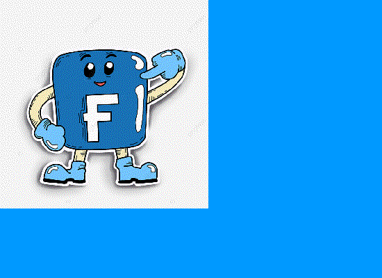

Facebook es una red social pensada para conectar personas, es decir, compartir información, noticias y contenidos audiovisuales con amigos y familiares. Propiedad de la empresa Meta, ésta es la plataforma social más grande y popular de todas las existentes en la actualidad.
Esta plataforma social nació en el año 2004, de la mano del estadounidense Mark Zuckerberg y otros estudiantes de la Universidad de Harvard, que compartían habitación con él.
Ventajas
-Es una red social gratuita.
-Es un medio de comunicación.
-Puedes realizar llamadas y video llamadas.
-Es un álbum de recuerdos personales.

Desventajas
-Desinformación.
-Privacidad comprometida.
-Distracción.
-Adicción.
MALOS USOS DE LA APP
Un estudio realizado nos dice que los efectos nocivos van vinculados con la salud mental o física, sino que también se encontraron impactos negativos en el trabajo y el rendimiento académico.
Además de permitirle a los delincuentes obtener más víctimas de sexting, grooming y extorciones.